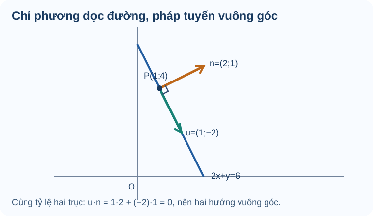

Bài 19. Phương trình đường thẳng
TOÁN 10 · CHƯƠNG VII · KIẾN THỨC SGK KNTT
Nhận biết vectơ pháp tuyến, vectơ chỉ phương và viết phương trình đường thẳng từ dữ kiện hình học.
Cùng tìm hiểu
Hãy tưởng tượng một con đường thẳng trên bản đồ. Em có thể mô tả nó bằng một điểm mà đường đi qua và một hướng để đi dọc đường. Đó là ý nghĩa của vectơ chỉ phương. Nhưng nếu muốn đo khoảng cách vuông góc từ một ngôi nhà đến con đường, ta cần một hướng vuông góc với đường — chính là vectơ pháp tuyến.
Hai vectơ ấy không giống nhau. Chẳng hạn, đường \(2x+y=6\) có pháp tuyến \(\vec n=(2,1)\). Một vectơ chỉ phương của đường là \(\vec u=(1,-2)\), vì \(\vec u\cdot\vec n=2-2=0\). Từ một hình học đơn giản, em có thể suy ra các hệ số trong phương trình mà không cần nhớ máy móc.
Bài học đi từ hai cách mô tả đường thẳng đến các dạng phương trình: tổng quát dùng pháp tuyến, tham số dùng điểm và chỉ phương. Khi đổi dạng, phải giữ cùng tập điểm, không chỉ thay ký hiệu.
Ví dụ trực quan
Hãy tự giải từng câu Tự thử trước khi mở Đối chiếu. Nếu vướng, hãy đọc phần tự khắc phục và tự làm lại một bài tương tự.
Pháp tuyến và chỉ phương
Khi mô tả một tuyến đường bằng tọa độ, chỉ biết một điểm chưa đủ: cần biết đường đi hướng nào. Vectơ chỉ phương chỉ hướng chuyển động; vectơ pháp tuyến cho biết hướng vuông góc để lập phương trình.
Kiến thức tiền đề: Nhắc lại vectơ tọa độ và tích vô hướng: (a,b)·(c,d)=ac+bd; hai vectơ khác 0 vuông góc khi tích vô hướng bằng 0.
Bản chất trước công thức: Vectơ chỉ phương nằm dọc đường; pháp tuyến vuông góc đường. Cùng một đường thẳng có vô số vectơ cùng phương hoặc pháp tuyến khác nhau bởi bội khác 0.
Hướng dẫn đọc hình: Hãy tưởng tượng một mũi tên chạy dọc đường thẳng và một mũi tên dựng vuông góc với nó; chỉ ra trên hình cái nào giữ hướng, cái nào đo độ lệch khỏi đường.
Muốn đổi giữa hai loại vectơ, xoay tọa độ 90 độ: n=(a,b) khác 0 thì u=(-b,a). Kiểm tra n·u=0, không dùng vectơ (0,0).
Vận dụng. Cho n=(2,3) là pháp tuyến của d. Vectơ u=(-3,2) có phải một chỉ phương của d không? Nêu phép kiểm.
Đối chiếu
Đáp án: Có, vì n·u=2(-3)+3(2)=0 và u≠(0,0).
Lý do: Tích vô hướng bằng 0 chứng minh u vuông góc với pháp tuyến n, tức song song với đường thẳng d; u không phải vectơ không.
Nếu chưa đúng: Mở hướng dẫn tự sửa ngay bên dưới, xem lại bước còn vướng rồi thử một câu cùng kiến thức.
Mở câu luyện tập tương ứng để tự luyện
Phương trình tổng quát qua điểm
Cần một quy tắc để xác định mọi điểm trên đường thẳng, không chỉ liệt kê một vài điểm.
Kiến thức tiền đề: Ôn quy tắc hai vectơ vuông góc khi tích vô hướng bằng 0; tọa độ của AM là (x-xA,y-yA).
Bản chất trước công thức: M thuộc đường qua A có pháp tuyến n khi độ dịch chuyển AM không có thành phần theo n: n·AM=0. Đây là nguồn gốc phương trình, không phải một công thức học thuộc.
Hướng dẫn đọc hình: Hướng dẫn đọc đường qua A: M chạy dọc đường, còn n luôn dựng vuông góc; hình chiếu của AM lên n bằng 0.
Từ điểm A(x0,y0), n=(a,b)≠0, viết a(x-x0)+b(y-y0)=0 rồi khai triển. Kiểm lại điểm A và độ dài pháp tuyến khác 0.
Vận dụng. Đường thẳng qua A(1,3), pháp tuyến n=(2,-1) có phương trình tổng quát nào?
Đối chiếu
Đáp án: 2(x-1)-(y-3)=0 hay 2x-y+1=0.
Lý do: AM=(x-1,y-3), n·AM=2(x-1)-(y-3); thế A được 0. Không tự đảo vai trò n với vectơ chỉ phương.
Nếu chưa đúng: Mở hướng dẫn tự sửa ngay bên dưới, xem lại bước còn vướng rồi thử một câu cùng kiến thức.
Mở câu luyện tập tương ứng để tự luyện
Phương trình tham số
Khi mô tả chuyển động trên một tuyến đường, có lúc cần biết điểm đến ứng với một bước t cụ thể.
Kiến thức tiền đề: Ôn phép nhân số thực với vectơ; A+t·u là vị trí dọc hướng u tính từ A.
Bản chất trước công thức: Điểm trên đường thẳng có dạng M=A+t·u với t thực. Tham số t không nhất thiết là thời gian; nó chỉ là hệ số quét các vị trí.
Hướng dẫn đọc hình: Tưởng tượng trượt từ A theo mũi tên u: t=0 đứng ở A, t=1 tiến một u, t âm đi ngược chiều.
Chọn một điểm A và một vectơ chỉ phương u≠0, đặt x=xA+tux, y=yA+tuy. Kiểm t=0 và t=1, tránh nhầm t là một tọa độ.
Vận dụng. Viết phương trình tham số đường thẳng qua A(1,-1), chỉ phương u=(-2,3).
Đối chiếu
Đáp án: x=1-2t, y=-1+3t (t∈ℝ).
Lý do: Khi t=0 thu A; khi t=1 thu A+u=(-1,2). Mọi điểm thuộc đường có độ dời t·u.
Nếu chưa đúng: Mở hướng dẫn tự sửa ngay bên dưới, xem lại bước còn vướng rồi thử một câu cùng kiến thức.
Mở câu luyện tập tương ứng để tự luyện
Đường qua hai điểm phân biệt
Trên bản đồ, hai địa điểm khác nhau đủ xác định một tuyến đường thẳng duy nhất.
Kiến thức tiền đề: Ôn vectơ AB=(xB-xA,yB-yA), điều kiện A≠B, và pháp tuyến vuông góc với AB.
Bản chất trước công thức: Hai điểm phân biệt xác định một hướng AB không bằng 0; từ đó chọn được pháp tuyến và viết được phương trình.
Hướng dẫn đọc hình: Đặt A và B trên hình; chỉ vectơ AB chạy dọc đường, còn pháp tuyến dựng ngang với nó.
Kiểm A≠B, tính AB, chọn n vuông góc, viết n·AM=0 và thử cả A,B. Nếu A=B thì dữ kiện không xác định một đường duy nhất.
Vận dụng. Cho A(-1,2), B(2,5). Viết một phương trình tổng quát của đường AB.
Đối chiếu
Đáp án: x-y+3=0.
Lý do: AB=(3,3)≠0, chọn n=(1,-1). Qua A: (x+1)-(y-2)=0 ⇒ x-y+3=0; thế B: 2-5+3=0.
Nếu chưa đúng: Mở hướng dẫn tự sửa ngay bên dưới, xem lại bước còn vướng rồi thử một câu cùng kiến thức.
Mở câu luyện tập tương ứng để tự luyện
Điểm thuộc đường thẳng
Muốn biết một vị trí thực tế có nằm trên tuyến đường đã cho không, ta cần phép kiểm nhanh và chắc chắn.
Kiến thức tiền đề: Ôn thay tọa độ điểm vào biểu thức ax+by+c; điểm trên đường phải làm vế trái bằng 0.
Bản chất trước công thức: Phương trình đường thẳng là điều kiện ràng buộc tọa độ; 'thuộc' không dựa vào nhìn gần đúng mà là thỏa chính xác điều kiện.
Hướng dẫn đọc hình: Với hai điểm trên mặt phẳng, thử điểm được đánh dấu trên đường và điểm lệch đường; khoảng cách thị giác chỉ gợi ý, phép thế quyết định.
Thế (xM,yM) vào ax+by+c; bằng 0 thì M thuộc, khác 0 thì không. Không chia hay chuyển vế làm mất dấu.
Vận dụng. Với d: 2x-3y+1=0, M(1,1) và N(2,1) điểm nào thuộc d?
Đối chiếu
Đáp án: M thuộc d vì 2-3+1=0; N không thuộc vì 4-3+1=2.
Lý do: Điểm thuộc là nghiệm của phương trình theo cặp tọa độ. Đây là phép thử hai lần độc lập.
Nếu chưa đúng: Mở hướng dẫn tự sửa ngay bên dưới, xem lại bước còn vướng rồi thử một câu cùng kiến thức.
Mở câu luyện tập tương ứng để tự luyện
Giao điểm và quan hệ vuông góc
Khi hai tuyến đường cắt nhau, cần biết điểm gặp nhau và góc giữa chúng; hai yêu cầu phải được kiểm bằng hai cách khác nhau.
Kiến thức tiền đề: Ôn giải hệ hai phương trình bậc nhất và tích vô hướng của hai pháp tuyến.
Bản chất trước công thức: Giao điểm phải thỏa đồng thời hai phương trình; vuông góc là quan hệ hướng, không phụ thuộc vị trí giao.
Hướng dẫn đọc hình: Vẽ hai đường cắt nhau và đánh dấu giao điểm; phân biệt tính giao điểm và kiểm góc vuông của hai hướng.
Giải hệ trước để có tọa độ giao; kiểm bằng cách thế lại cả hai. Sau đó dùng tích vô hướng hai pháp tuyến để kết luận vuông góc.
Vận dụng. Hai đường d1: x+y=4, d2: x-y=2 gặp nhau ở đâu và có vuông góc không?
Đối chiếu
Đáp án: Giao I(3,1); hai đường vuông góc.
Lý do: Cộng hai phương trình được 2x=6 ⇒ x=3, y=1. Pháp tuyến (1,1) và (1,-1) có tích vô hướng 1-1=0.
Nếu chưa đúng: Mở hướng dẫn tự sửa ngay bên dưới, xem lại bước còn vướng rồi thử một câu cùng kiến thức.
Mở câu luyện tập tương ứng để tự luyện
Mô hình tuyến tính từ dữ liệu
Hai quan sát có thể giúp ước lượng một xu hướng tuyến tính đơn giản, chẳng hạn giá trị tăng đều theo thời gian.
Kiến thức tiền đề: Nhắc lại đường thẳng qua hai điểm và hệ số góc là mức thay đổi Δy/Δx khi Δx≠0.
Bản chất trước công thức: Một quan hệ y=mx+b mô tả mỗi khi x tăng một đơn vị, y tăng m đơn vị; b là giá trị tại x=0. Mô hình chỉ đáng tin trong miền dữ liệu phù hợp.
Hướng dẫn đọc hình: Trên hệ trục có hai chấm dữ liệu, giải thích m là 'độ tăng đứng / độ tăng ngang'; cần ghi đơn vị trên cả hai trục.
Tính m=(y2-y1)/(x2-x1) khi x2≠x1; thay một điểm để tìm b, sau đó kiểm điểm còn lại và ghi miền ứng dụng.
Vận dụng. Giá trị V theo thời gian t (t≥0) đi qua (0,5) và (2,9), giả sử tuyến tính. Lập V(t) và tính V(3).
Đối chiếu
Đáp án: V(t)=2t+5, V(3)=11.
Lý do: Hệ số góc (9-5)/(2-0)=2, giá trị tại t=0 là 5. Đây là phép ngoại suy t=3, chỉ hợp lý nếu giả thiết tăng đều vẫn đúng.
Nếu chưa đúng: Mở hướng dẫn tự sửa ngay bên dưới, xem lại bước còn vướng rồi thử một câu cùng kiến thức.
Mở câu luyện tập tương ứng để tự luyện
Thuật ngữ, kiến thức và kỹ năng
Thuật ngữ: Vectơ chỉ phương, vectơ pháp tuyến, phương trình tổng quát, phương trình tham số, tham số (t), điểm thuộc đường thẳng.
Sau bài học, em cần làm được: Dựng đường từ điểm và vectơ; đổi giữa dạng tổng quát và tham số; tìm đường qua hai điểm phân biệt; kiểm điểm thuộc và tính giao khi đủ điều kiện.
2.1. Phương trình tổng quát của đường thẳng
Vectơ pháp tuyến và vectơ chỉ phương

Cách đọc hình. Quan sát vectơ chỉ phương \(\vec u=(1,-2)\) đi dọc đường \(2x+y=6\), còn \(\vec n=(2,1)\) vuông góc với đường. Điểm \(P(1,4)\) nằm trên đường vì \(2\cdot1+4=6\). Đường thẳng \(\Delta\) nhận vectơ pháp tuyến \(\vec n=(a;b)\ne(0;0)\) khi \(\vec n\) vuông góc với đường thẳng. Đường thẳng nhận vectơ chỉ phương \(\vec u=(u_1;u_2)\ne(0;0)\) khi \(\vec u\) song song với đường thẳng.
Nếu \(\vec n=(a;b)\) thì có thể chọn \(\vec u=(-b;a)\). Cần phân biệt rõ vai trò hai vectơ, không lấy nhầm vectơ nối hai điểm làm pháp tuyến.
Qua điểm \(M_0(x_0;y_0)\) và pháp tuyến \(\vec n=(a;b)\):
Đây là phương trình tổng quát \(ax+by+c=0\).
2.2. Phương trình tham số của đường thẳng
Với vectơ chỉ phương \(\vec u=(u_1;u_2)\), phương trình tham số là:
Nếu đường thẳng đi qua \(A\) và \(B\), phải có \(A\ne B\) mới dùng được \(\overrightarrow{AB}\) làm vectơ chỉ phương.
Trước khi xem lời giải, hãy xác định dữ kiện, điều phải tìm và lý do chọn cách giải. Sau đó kiểm tra lại điều kiện áp dụng và kết quả, thay vì chỉ nhìn phép tính cuối cùng.
Ví dụ — Từ điểm và pháp tuyến đến phương trình
Đề bài. Lập phương trình đường thẳng qua \(P(1,4)\) có vectơ pháp tuyến \(\vec n=(2,1)\). Tìm một vectơ chỉ phương.
Vì sao chọn cách này? Dữ kiện cho pháp tuyến, vì vậy phương trình tổng quát qua điểm là con đường trực tiếp nhất.
Lời giải. \(2(x-1)+(y-4)=0\), hay \(2x+y-6=0\). Vectơ \(\vec u=(1,-2)\) có \(\vec u\cdot\vec n=2-2=0\), nên là một vectơ chỉ phương.
Kiểm lại: \(P(1,4)\) thỏa \(2+4-6=0\).
Ví dụ 2 — Viết hai dạng phương trình của đường thẳng qua hai điểm
Đề bài. Cho \(A(1;2)\), \(B(4;3)\). Hãy viết phương trình tổng quát và phương trình tham số của đường thẳng \(AB\).
Vì sao chọn cách này? Hai điểm phân biệt cho một vectơ chỉ phương; từ đó chọn một vectơ pháp tuyến để lập phương trình tổng quát.
Lời giải. Ta có \(\overrightarrow{AB}=(3;1)\), nên một pháp tuyến là \((1;-3)\).
- Dạng tổng quát: \((x-1)-3(y-2)=0\), hay \(\boxed{x-3y+5=0}\).
- Dạng tham số: \(x=1+3t,\ y=2+t,\ t\in\mathbb R\).
- Kiểm tra: thế tọa độ \(A,B\) vào phương trình tổng quát đều cho \(0\).
Vì sao: điểm \(M\) thuộc đường thẳng khi \(\overrightarrow{AM}\perp\vec n\); biểu thức tham số quét mọi bội số của vectơ chỉ phương.
Tự nhớ
Trong \(ax+by+c=0\), không được để đồng thời \(a=b=0\). Hai phương trình khác hệ số vẫn có thể xác định cùng một đường thẳng nếu toàn bộ hệ số tỉ lệ.
Tự khắc phục theo năm bước
-
Nhận diện lỗi: Nếu dùng n làm chỉ phương, em đang nhầm hai vai trò vuông góc.
-
Quay lại bản chất: Vectơ chỉ phương nằm dọc đường; pháp tuyến vuông góc đường. Cùng một đường thẳng có vô số vectơ cùng phương hoặc pháp tuyến khác nhau bởi bội khác 0.
-
Tự sửa: Vẽ hai mũi tên dọc/vuông góc; tính lại 2(-3)+3(2) trước khi áp dụng.
-
Tự đối chiếu: xem lại lời giải trên sau khi em tự làm; kiểm các điều kiện và dữ kiện của bài vừa Tự thử.
-
Luyện tiếp: Dùng liên kết bên dưới để luyện câu cùng kiến thức. Nếu đã xem lời giải, hãy chọn thêm câu khác và tự làm mà không dựa vào gợi ý.
Tự khắc phục theo năm bước
-
Nhận diện lỗi: Nếu phương trình không đi qua A, em đã mất dấu khi trừ tọa độ gốc.
-
Quay lại bản chất: M thuộc đường qua A có pháp tuyến n khi độ dịch chuyển AM không có thành phần theo n: n·AM=0. Đây là nguồn gốc phương trình, không phải một công thức học thuộc.
-
Tự sửa: Thay ngay A(1,3) vào phương trình: phải được 0 trước khi luyện tiếp.
-
Tự đối chiếu: xem lại lời giải trên sau khi em tự làm; kiểm các điều kiện và dữ kiện của bài vừa Tự thử.
-
Luyện tiếp: Dùng liên kết bên dưới để luyện câu cùng kiến thức. Nếu đã xem lời giải, hãy chọn thêm câu khác và tự làm mà không dựa vào gợi ý.
Tự khắc phục theo năm bước
-
Nhận diện lỗi: Nếu đảo u thành pháp tuyến hoặc thiếu tham số chung t, hai phương trình không mô tả đúng một đường.
-
Quay lại bản chất: Điểm trên đường thẳng có dạng M=A+t·u với t thực. Tham số t không nhất thiết là thời gian; nó chỉ là hệ số quét các vị trí.
-
Tự sửa: Thử lại t=0, t=1 và vẽ đường nối hai điểm thu được.
-
Tự đối chiếu: xem lại lời giải trên sau khi em tự làm; kiểm các điều kiện và dữ kiện của bài vừa Tự thử.
-
Luyện tiếp: Dùng liên kết bên dưới để luyện câu cùng kiến thức. Nếu đã xem lời giải, hãy chọn thêm câu khác và tự làm mà không dựa vào gợi ý.
Tự khắc phục theo năm bước
-
Nhận diện lỗi: Nếu lấy AB làm pháp tuyến, đường mới thường vuông góc với AB thay vì đi qua cả A,B.
-
Quay lại bản chất: Hai điểm phân biệt xác định một hướng AB không bằng 0; từ đó chọn được pháp tuyến và viết được phương trình.
-
Tự sửa: Vẽ đoạn AB, kiểm n·AB=0 và thế từng điểm vào phương trình.
-
Tự đối chiếu: xem lại lời giải trên sau khi em tự làm; kiểm các điều kiện và dữ kiện của bài vừa Tự thử.
-
Luyện tiếp: Dùng liên kết bên dưới để luyện câu cùng kiến thức. Nếu đã xem lời giải, hãy chọn thêm câu khác và tự làm mà không dựa vào gợi ý.
Tự khắc phục theo năm bước
-
Nhận diện lỗi: Nếu chỉ nhìn số hạng đầu hoặc bỏ dấu âm của 3y, phép thử có thể sai.
-
Quay lại bản chất: Phương trình đường thẳng là điều kiện ràng buộc tọa độ; 'thuộc' không dựa vào nhìn gần đúng mà là thỏa chính xác điều kiện.
-
Tự sửa: Lập hai dòng thay tọa độ từng điểm, so với 0 trước khi kết luận.
-
Tự đối chiếu: xem lại lời giải trên sau khi em tự làm; kiểm các điều kiện và dữ kiện của bài vừa Tự thử.
-
Luyện tiếp: Dùng liên kết bên dưới để luyện câu cùng kiến thức. Nếu đã xem lời giải, hãy chọn thêm câu khác và tự làm mà không dựa vào gợi ý.
Tự khắc phục theo năm bước
-
Nhận diện lỗi: Nếu chỉ giải được giao điểm mà suy ra vuông góc, em đã đánh đồng vị trí với góc.
-
Quay lại bản chất: Giao điểm phải thỏa đồng thời hai phương trình; vuông góc là quan hệ hướng, không phụ thuộc vị trí giao.
-
Tự sửa: Tách làm hai cột: 'I thỏa hai phương trình' và 'n1·n2=0' rồi kiểm riêng.
-
Tự đối chiếu: xem lại lời giải trên sau khi em tự làm; kiểm các điều kiện và dữ kiện của bài vừa Tự thử.
-
Luyện tiếp: Dùng liên kết bên dưới để luyện câu cùng kiến thức. Nếu đã xem lời giải, hãy chọn thêm câu khác và tự làm mà không dựa vào gợi ý.
Tự khắc phục theo năm bước
-
Nhận diện lỗi: Nếu viết V=5t+2, em đã nhầm hệ số góc với giá trị ban đầu.
-
Quay lại bản chất: Một quan hệ y=mx+b mô tả mỗi khi x tăng một đơn vị, y tăng m đơn vị; b là giá trị tại x=0. Mô hình chỉ đáng tin trong miền dữ liệu phù hợp.
-
Tự sửa: Kiểm cả V(0)=5 và V(2)=9 trước khi tính V(3).
-
Tự đối chiếu: xem lại lời giải trên sau khi em tự làm; kiểm các điều kiện và dữ kiện của bài vừa Tự thử.
-
Luyện tiếp: Dùng liên kết bên dưới để luyện câu cùng kiến thức. Nếu đã xem lời giải, hãy chọn thêm câu khác và tự làm mà không dựa vào gợi ý.
Nhầm vectơ pháp tuyến/chỉ phương
Dấu hiệu: Từ ax+by+c=0 dùng (a;b) làm chỉ phương, hoặc chấp nhận vectơ không.
Bản chất toán: Với (a;b)≠(0;0), n=(a;b) là pháp tuyến, u=(-b;a) có thể làm chỉ phương vì n·u=0 và u≠0.
Tự sửa: Ôn B19 mục 1: đánh dấu n và u, tự kiểm n·u=0 rồi mới viết phương trình.
Kiến thức cần ôn: Vectơ tọa độ, tích vô hướng; B19 mục 1.
Luyện lại bài đã có: Luyện lại câu 19-C01 · Luyện lại câu 19-P05
Viết đường thẳng qua hai điểm chưa kiểm điều kiện
Dấu hiệu: Nhầm AB là pháp tuyến, quên A≠B hoặc không thử nghiệm kết quả.
Bản chất toán: Chỉ khi A≠B, AB khác 0 và là một vectơ chỉ phương; chọn n vuông góc AB, rồi thế cả A và B để kiểm phương trình.
Tự sửa: Ôn B19 mục 2–3: tìm vectơ \(\overrightarrow{AB}\) với \(A\ne B\), chọn \(\vec n=(a;b)\) vuông góc \(\overrightarrow{AB}\); viết \(a(x-x_A)+b(y-y_A)=0\) (tương đương \(\vec n\cdot\overrightarrow{AM}=0\)); thử lại cả A và B.
Kiến thức cần ôn: Hiệu tọa độ hai điểm, vectơ khác 0; B19 mục 2–3.
Luyện lại bài đã có: Luyện lại câu 19-P02 · Luyện lại câu 19-P06 · Bài tự luận liên quan
Học tiếp: Core và Luyện tập · Tự kiểm tra cuối chương.
Nguồn toán học: SGK Toán 10 Kết nối tri thức với cuộc sống và học liệu SLM hiện hành. Lời giảng được biên tập nhằm hỗ trợ tự học độc lập.
Nguồn đối chiếu: SGK KNTT Toán 10 tập 2, trang in 30–35; SBT trang 28–31.